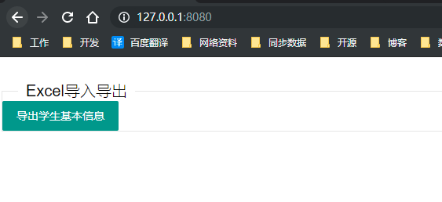
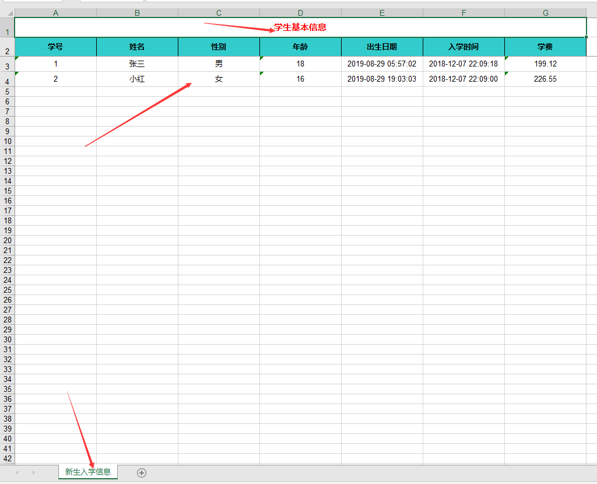

在一般的生产管理系统都会将数据通过页面导出到Excel，这里以Java为例通过第三方开源poi进行对Excel的操作，具体操作如下
这里我以maven的方式引入jar包，具体依赖如下
<dependency>
<groupId>cn.afterturn</groupId>
<artifactId>easypoi-base</artifactId>
<version>3.2.0</version>
</dependency>package com.sunny.spring.boot.poi.common;
import org.apache.poi.ss.usermodel.BorderStyle;
import org.apache.poi.ss.usermodel.CellStyle;
import org.apache.poi.ss.usermodel.FillPatternType;
import org.apache.poi.ss.usermodel.Font;
import org.apache.poi.ss.usermodel.HorizontalAlignment;
import org.apache.poi.ss.usermodel.IndexedColors;
import org.apache.poi.ss.usermodel.VerticalAlignment;
import org.apache.poi.ss.usermodel.Workbook;
import cn.afterturn.easypoi.excel.export.styler.AbstractExcelExportStyler;
import cn.afterturn.easypoi.excel.export.styler.IExcelExportStyler;
/**
* @ClassName: ExcelExportMyStylerImpl
* @Description: 自定义报表导出样式，可以修改表头颜色，高度等
* @Author: sunt
* @Date: 2019/8/29 21:39
* @Version 1.0
**/
public class ExcelExportMyStylerImpl extends AbstractExcelExportStyler implements IExcelExportStyler {
public ExcelExportMyStylerImpl(Workbook workbook) {
super.createStyles(workbook);
}
@Override
public CellStyle getTitleStyle(short color) {
CellStyle titleStyle = workbook.createCellStyle();
Font font = workbook.createFont();
font.setBold(true);// 加粗
titleStyle.setFont(font);
titleStyle.setAlignment(HorizontalAlignment.CENTER);// 居中
titleStyle.setVerticalAlignment(VerticalAlignment.CENTER);// 垂直居中
titleStyle.setFillForegroundColor(IndexedColors.AQUA.index);// 设置颜色
titleStyle.setFillPattern(FillPatternType.SOLID_FOREGROUND);
titleStyle.setBorderRight(BorderStyle.THIN);
titleStyle.setWrapText(true);
return titleStyle;
}
@SuppressWarnings("deprecation")
@Override
public CellStyle stringSeptailStyle(Workbook workbook, boolean isWarp) {
CellStyle style = workbook.createCellStyle();
style.setAlignment(CellStyle.ALIGN_CENTER);
style.setVerticalAlignment(CellStyle.VERTICAL_CENTER);
style.setDataFormat(STRING_FORMAT);
if (isWarp) {
style.setWrapText(true);
}
return style;
}
@Override
public CellStyle getHeaderStyle(short color) {
CellStyle titleStyle = workbook.createCellStyle();
Font font = workbook.createFont();
font.setBold(true);// 加粗
font.setColor(IndexedColors.RED.index);
font.setFontHeightInPoints((short) 11);
titleStyle.setFont(font);
titleStyle.setAlignment(HorizontalAlignment.CENTER);// 居中
titleStyle.setFillForegroundColor(IndexedColors.WHITE.index);// 设置颜色
titleStyle.setVerticalAlignment(VerticalAlignment.CENTER);// 垂直居中
titleStyle.setFillPattern(FillPatternType.SOLID_FOREGROUND);
titleStyle.setBorderRight(BorderStyle.THIN);
titleStyle.setWrapText(true);
return titleStyle;
}
@SuppressWarnings("deprecation")
@Override
public CellStyle stringNoneStyle(Workbook workbook, boolean isWarp) {
CellStyle style = workbook.createCellStyle();
style.setAlignment(CellStyle.ALIGN_CENTER);
style.setVerticalAlignment(CellStyle.VERTICAL_CENTER);
style.setDataFormat(STRING_FORMAT);
if (isWarp) {
style.setWrapText(true);
}
return style;
}
}（注:该类只需要传递导出的Excel的数据集合、导出对象实体Bean(具体下面详细说明)、表头名称、sheet名称）
package com.sunny.spring.boot.poi.util;
import cn.afterturn.easypoi.excel.ExcelExportUtil;
import cn.afterturn.easypoi.excel.entity.ExportParams;
import com.sunny.spring.boot.poi.common.ExcelExportMyStylerImpl;
import com.sunny.spring.boot.poi.pojo.StudentInfoBean;
import org.apache.poi.ss.formula.functions.T;
import org.apache.poi.ss.usermodel.Workbook;
import javax.servlet.ServletOutputStream;
import javax.servlet.http.HttpServletResponse;
import java.net.URLEncoder;
import java.text.SimpleDateFormat;
import java.util.Collection;
import java.util.Date;
import java.util.List;
/**
* @ClassName: ExcelExportUtil
* @Description: Exceld导出工具类
* @Author: sunt
* @Date: 2019/8/30 14:49
* @Version 1.0
**/
public class MyExcelExportUtil {
/**
* Excel文件导出,导出的文件名默认为:headTitle+当前系统时间
* @param listData 要导出的list数据
* @param pojoClass 定义excel属性信息
* @param headTitle Excel文件头信息
* @param sheetName Excel文件sheet名称
* @param response
*/
public static void exportExcel(Collection<?> listData,Class<?> pojoClass, String headTitle, String sheetName, HttpServletResponse response) {
ExportParams params = new ExportParams(headTitle, sheetName);
params.setHeight((short) 8);
params.setStyle(ExcelExportMyStylerImpl.class);
try {
Workbook workbook = ExcelExportUtil.exportExcel(params, pojoClass, listData);
String fileName = headTitle + new SimpleDateFormat("yyyyMMddHHmmss").format(new Date());
fileName = URLEncoder.encode(fileName, "UTF8");
response.setContentType("application/vnd.ms-excel;chartset=utf-8");
response.setHeader("Content-Disposition", "attachment;filename="+fileName + ".xls");
ServletOutputStream out=response.getOutputStream();
workbook.write(out);
out.flush();
out.close();
} catch (Exception e) {
e.printStackTrace();
}
}
}该对象主要作用指定导出到Excel列名称、宽度、列排序等信息，先贴代码吗，这里以学生基本信息为案例说明
package com.sunny.spring.boot.poi.pojo;
import cn.afterturn.easypoi.excel.annotation.Excel;
import com.baomidou.mybatisplus.annotation.TableField;
import com.baomidou.mybatisplus.annotation.TableId;
import com.baomidou.mybatisplus.annotation.TableName;
import lombok.Data;
import lombok.EqualsAndHashCode;
import lombok.experimental.Accessors;
import java.io.Serializable;
import java.math.BigDecimal;
/**
* <p>
* 学生基本信息表
* </p>
*
* @author sunt
* @since 2019-08-29
*/
@Data
@EqualsAndHashCode(callSuper = false)
@Accessors(chain = true)
@TableName("T_STUDENT")
public class StudentInfoBean implements Serializable {
private static final long serialVersionUID = 1L;
/**
* 学号
*/
@TableId("ID")
@Excel(name = "学号", width = 20, orderNum = "1")
private String id;
/**
* 姓名
*/
@TableField("NAME")
@Excel(name = "姓名", width = 20, orderNum = "2")
private String name;
/**
* 性别(1:男 2:女)
* replace:导出是{a_id,b_id} 导入反过来,注意大括号里面单独引号引起来的
*/
@TableField("SEX")
@Excel(name = "性别", width = 20, replace = { "男_1", "女_2" },orderNum = "3")
private String sex;
/**
* 年龄
*/
@TableField("AGE")
@Excel(name = "年龄", width = 20, orderNum = "4")
private Integer age;
/**
* 出生日期
*/
@TableField("BIRTHDAY")
@Excel(name = "出生日期", width = 20, orderNum = "5")
private String birthday;
/**
* 入学时间
*/
@TableField("REGIST_DATE")
@Excel(name = "入学时间",width = 20,orderNum = "6")
private String registDate;
/**
* 学费
*/
@TableField("FEE")
@Excel(name = "学费", width = 20, orderNum = "7")
private BigDecimal fee;
}| 属性字段 | 属性值 |
|
这个字段代表数据库表的字段 |
|
name代表导出Excel列名称 |
| @Excel | orderNum代表Excel列排在第几列 |
| @Excel | replace一般数据库存的性别例如0和1，导出的值0展示为男性，女展示为女性 |
’
这里我们点击页面导出按钮将数据库信息查询出来导出到Excel
CREATE TABLE `t_student` (
`ID` varchar(20) NOT NULL COMMENT '学号',
`NAME` varchar(20) NOT NULL COMMENT '姓名',
`SEX` char(1) NOT NULL COMMENT '性别(1:男 2:女)',
`AGE` int(3) NOT NULL COMMENT '年龄',
`BIRTHDAY` datetime NOT NULL COMMENT '出生日期',
`REGIST_DATE` datetime NOT NULL COMMENT '入学时间',
`FEE` decimal(5,2) NOT NULL COMMENT '学费',
PRIMARY KEY (`ID`)
) ENGINE=InnoDB DEFAULT CHARSET=utf8 COMMENT='学生基本信息表';INSERT INTO `study`.`t_student` (`ID`, `NAME`, `SEX`, `AGE`, `BIRTHDAY`, `REGIST_DATE`, `FEE`) VALUES ('1', '张三', '1', '18', '2019-08-29 05:57:02', '2019-08-29 18:00:00', '199.12');
INSERT INTO `study`.`t_student` (`ID`, `NAME`, `SEX`, `AGE`, `BIRTHDAY`, `REGIST_DATE`, `FEE`) VALUES ('2', '小红', '2', '16', '2019-08-29 19:03:03', '2019-08-29 00:00:00', '226.55');这里不做限制，以自己项目所使用的技术实现查询信息即可，这里只贴出接口代码，具体实现按自己的业务场景进行实现
package com.sunny.spring.boot.poi.service;
import com.sunny.spring.boot.poi.pojo.StudentInfoBean;
import java.util.List;
/**
* @ClassName: IStudentService
* @Description: 学生基本信息接口
* @Author: sunt
* @Date: 2019/8/30 14:56
* @Version 1.0
**/
public interface IStudentService {
/**
* 查询所有学生
* @return
*/
List<StudentInfoBean> queryAllStudent();
}[
{
"id": "1",
"name": "张三",
"sex": "1",
"age": 18,
"birthday": "2019-08-29 05:57:02",
"registDate": "2019-08-29 18:00:00",
"fee": 199.12
},
{
"id": "2",
"name": "小红",
"sex": "2",
"age": 16,
"birthday": "2019-08-29 19:03:03",
"registDate": "2019-08-29 00:00:00",
"fee": 226.55
}
]其实这里是最核心也是最简单的地方，只需要调用上一步查询所有学生基本信息的接口获取到数据然后再调用导出Excel工具类即可，具体实现如下
package com.sunny.spring.boot.poi.controller;
import com.sunny.spring.boot.poi.pojo.StudentInfoBean;
import com.sunny.spring.boot.poi.service.IStudentService;
import com.sunny.spring.boot.poi.util.MyExcelExportUtil;
import org.springframework.beans.factory.annotation.Autowired;
import org.springframework.stereotype.Controller;
import org.springframework.web.bind.annotation.RequestMapping;
import javax.servlet.http.HttpServletResponse;
import java.util.Collections;
import java.util.List;
/**
* @ClassName: StudentController
* @Description: Excel导出测试
* @Author: sunt
* @Date: 2019/8/30 14:59
* @Version 1.0
**/
@Controller
@RequestMapping("/export")
public class ExcelExportController {
@Autowired(required = false)
private IStudentService studentService;
@RequestMapping("/exportStudent")
public void exportStudent(HttpServletResponse response) {
try {
List<StudentInfoBean> sutdentList = studentService.queryAllStudent();
MyExcelExportUtil.exportExcel(sutdentList,StudentInfoBean.class,"学生基本信息","新生入学信息",response);
} catch (Exception e) {
e.printStackTrace();
}
}
}<!DOCTYPE html>
<html>
<head>
<meta charset="utf-8">
<title>layui</title>
<meta name="renderer" content="webkit">
<meta http-equiv="X-UA-Compatible" content="IE=edge,chrome=1">
<meta name="viewport" content="width=device-width, initial-scale=1, maximum-scale=1">
<link rel="stylesheet" href="layui\css\layui.css" media="all">
<!-- 注意：如果你直接复制所有代码到本地，上述css路径需要改成你本地的 -->
</head>
<body>
<form action="/export/exportStudent">
<fieldset class="layui-elem-field site-demo-button" style="margin-top: 30px;">
<legend>Excel导入导出</legend>
<div>
<button class="layui-btn" lay-submit="" lay-filter="studentForm">导出学生基本信息</button>
</div>
</fieldset>
</form>
</body>
</html>
导出样式展示

https://gitee.com/SunnySVN/SpringBoot-Study.git 欢迎各位大佬路过点个Star
注:poi多个sheet的导出以及合并单元格的方式导出，有需求的小伙伴可以在评论区留言，有时间我会更新